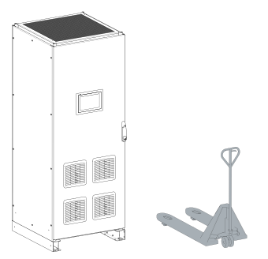

Transport the Cabinet with a Forklift or Pallet Truck
| Warning | |
|---|---|
Each transport unit can be moved by a forklift or pallet truck rated for the weight of the transport unit.
Note: If mounted, the plinth plate cover needs to be removed.
Before transportation check that:
-
The forks are placed as far apart as possible under the transport unit.
-
The frame of the transport unit rests completely on the forks.
-
The distance between the forks and center of gravity is approximately equal so that the center of gravity is in the middle of the forks.
-
The forks extend past the back of the system.
Note: Make sure the forks are not placed too close to the system plinth.
